Gêmeo Digital CR10 + COVVI Hand
Plataforma virtual de auxílio ao treinamento de usuários de próteses de mão com múltiplos graus de liberdade — braço industrial Dobot CR10 acoplado à mão protética biônica COVVI Hand, em ROS 2 Humble / Gazebo Classic 11, com canal direto para o hardware real e uma segunda célula de palpação tátil.
O projeto
O sistema identifica objetos farmacêuticos numa esteira, classifica-os pelo tipo de preensão necessário e os deposita nas caixas corretas. O mesmo hardware (CR10 + COVVI) é reaproveitado numa célula de palpação tátil que reproduz o protocolo de Gupta et al. 2021 — aproximação com controle de força, hold estabilizado e deslizamento Cartesiano.
Hardware
| Componente | Modelo | Especificações |
|---|---|---|
| Braço | Dobot CR10 | 6-DOF · alcance 1375 mm · payload 10 kg · TCP/IP V4 |
| Mão | COVVI Hand | 5 dedos · 31 juntas (6 primárias + 25 mimic) · ECI Ethernet |
| Câmera | RGB Gazebo | 848×480 · FoV 70° · montada atrás da esteira |
| Célula de carga | ESP32 + sensor uniaxial | UDP 8080 · 1 kHz batched · filtro no receptor PC |
| Sensor de toque | STM32 + matriz 4×4 | USB-CDC 115200 · modelo de Izhikevich (RA/SA + I_final) · UDP 8081 opcional |
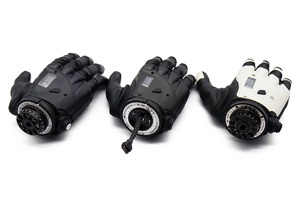
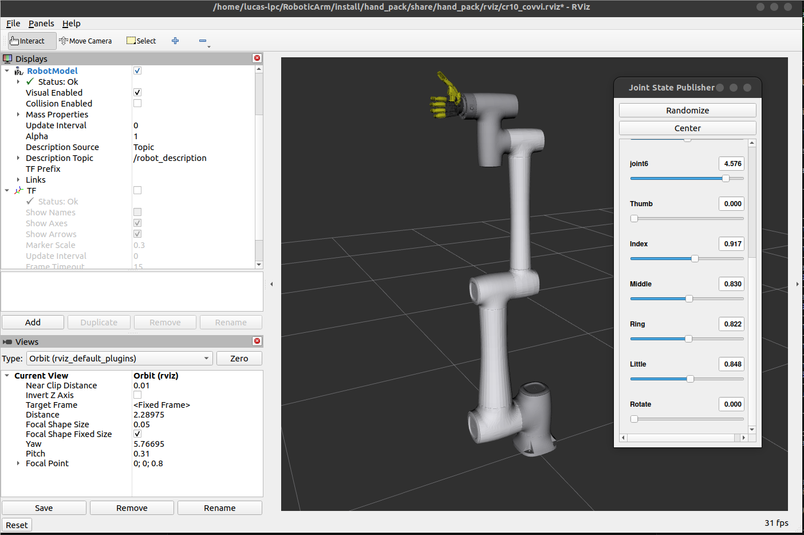
Topologia do sistema
Diagrama de blocos de alto nível: do mundo simulado (Gazebo) e GUIs em ROS 2 até o hardware físico (CR10 via TCP/IP, mão COVVI via ECI, sensores via UDP/USB).
CR10 + COVVI + cena"] CAM["Câmera RGB
/camera/color/image_raw"] JTC["ros2_control · JTC
braço + mão"] end subgraph ROS["🤖 ROS 2 Humble"] GUI["GUIs Tkinter
manual_control · palpation_gui"] GRASP["grasp_ml_pack
detecção · grasp · pipeline"] TOUCH["touch_pack
FSM palpação · força · logging"] HAND["hand_pack
URDF CR10+COVVI"] end subgraph HW["⚙️ Hardware Real (opcional)"] CR10["Dobot CR10
TCP/IP V4"] COVVI["COVVI Hand
ECI Ethernet"] ESP["ESP32 célula de carga
UDP 8080"] STM["STM32 sensor de toque
USB-CDC / UDP 8081"] end CAM --> GRASP GUI --> GRASP & TOUCH GRASP --> JTC TOUCH --> JTC HAND --- GZ JTC --> GZ GRASP -.mirror/real.-> CR10 GRASP -.ECI.-> COVVI TOUCH -.mirror/real.-> CR10 ESP --> TOUCH STM --> TOUCH classDef sim fill:#16223e,stroke:#3f8cff,color:#e7ecf6; classDef ros fill:#14233a,stroke:#22d3ee,color:#e7ecf6; classDef hw fill:#2a2113,stroke:#f59e0b,color:#e7ecf6; class GZ,CAM,JTC sim; class GUI,GRASP,TOUCH,HAND ros; class CR10,COVVI,ESP,STM hw;
Pacotes ROS 2
grasp_ml_pack
Esteira, detecção de objetos (HSV / YOLOv8), cinemática do CR10, controle da mão COVVI e orquestração do ciclo pick-and-place.
→ README do pacotetouch_pack
Protocolo Gupta 2021: FSM de força, GUI, logging sincronizado força+toque, célula de carga ESP32 e sensor STM32 (Izhikevich).
→ README do pacotehand_pack
URDF combinado CR10 + COVVI (31 juntas), helpers de launch, pós-processamento do URDF e GUIs auxiliares.
→ README do pacotecra_description
URDF/Xacro e meshes do Dobot CR10 (6-DOF), extraído do repositório oficial DOBOT_6Axis_ROS2_V4.
→ README do pacoteGrafo de nós (visão simplificada)
/joint_trajectory"]) PG["palpation_gui"] -->|"/palpation/start"| TE["tactile_explorer"] TE -->|"/palpation/status"| PG TE --> JT FR["force_receiver"] -->|"/load_cell/force"| FS["force_sync"] TR["touch_receiver"] -->|"/touch_sensor/value"| FS FS -->|"/touch_sync/data 50Hz"| LOG["palpation_logger"] TE --> LOG classDef n fill:#14233a,stroke:#22d3ee,color:#e7ecf6; class OD,GE,CC,PG,TE,FR,TR,FS,LOG n;
Célula de manufatura — grasp_ml_pack
A câmera RGB observa a esteira; o detector segmenta o objeto por cor (HSV) ou YOLOv8; o executor escolhe o tipo de preensão e a caixa de destino, resolve a IK e roda o ciclo de 7 fases de pick-and-place.
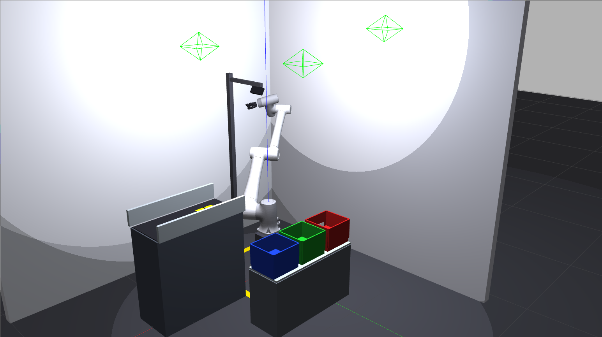
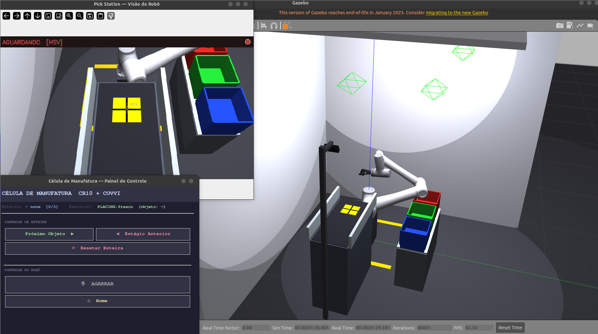
| Objeto | Cor no Gazebo | Preensão | Caixa |
|---|---|---|---|
| Frasco | Âmbar / laranja | Palm Grip | Box 1 — vermelha |
| Tubo | Azul | Claw Grip | Box 2 — verde |
| Ampola | Verde | Fingertip Grip | Box 3 — azul |
Célula de palpação — touch_pack
Reproduz o protocolo de Gupta et al. 2021. A FSM percorre aproximação → hold de força estabilizado → (deslizamento) → retração, com controle por streaming Jacobiano a 33 Hz e PID de força no eixo normal.
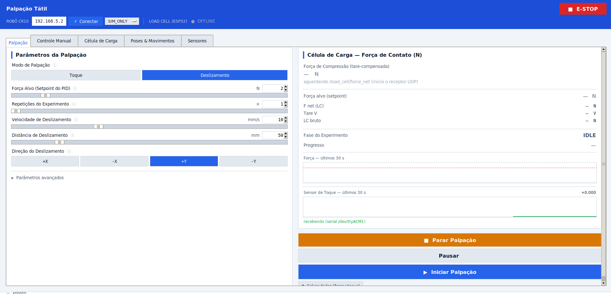
palpation_gui — aba Palpação (modo Deslizamento) com célula de carga ao vivo.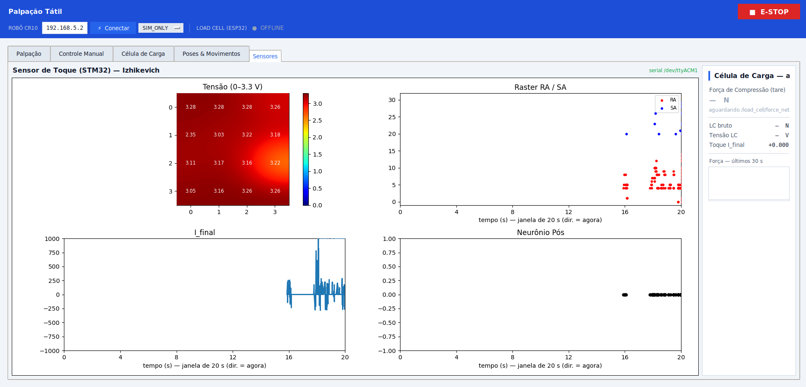
stale.Fluxo de dados — força & toque
A célula de carga (ESP32) transmite a 1 kHz batched por UDP; o sensor de toque (STM32) chega por USB-CDC ou UDP. O force_sync pareia as duas streams a 50 Hz e o palpation_logger grava CSV/JSON por run em sensors/Data/.
GPIO34 · 1 kHz batched"] -->|"UDP 8080"| FR["force_receiver
(filtro pesado no PC)"] STM["STM32 4×4
Izhikevich"] -->|"USB-CDC / UDP 8081"| TR["touch_source /
touch_receiver"] FR -->|"/load_cell/force"| FS["force_sync"] TR -->|"/touch_sensor/value"| FS FS -->|"/touch_sync/data
SyncedTouch 50 Hz"| LOG["palpation_logger"] LOG --> CSV[("sensors/Data/
*.csv · *.json")] classDef n fill:#14233a,stroke:#22d3ee,color:#e7ecf6; classDef s fill:#2a2113,stroke:#f59e0b,color:#e7ecf6; class FR,TR,FS,LOG n; class ESP,STM s;
🤖 Assistente do projeto
Faça uma pergunta sobre o projeto — pacotes, hardware, como rodar, a FSM de palpação, os tipos de preensão. O assistente roda 100% no seu navegador (sem servidor) a partir da base de conhecimento desta documentação.
🎛️ Simulador do PID de força (palpação)
Esta é a fase DESCENDING → HOLD do tactile_explorer: a ponta TouchTool desce, a compressão cresce com a penetração e o PID ajusta a velocidade em Z para levar a força ao setpoint. Mexa nos ganhos e veja a resposta — exatamente o trade-off que se ajusta na aba Avançados da GUI.
✋ Seletor de preensão da mão COVVI
Escolha um objeto farmacêutico e veja qual preensão a célula de manufatura aplica e em qual caixa ele é depositado.
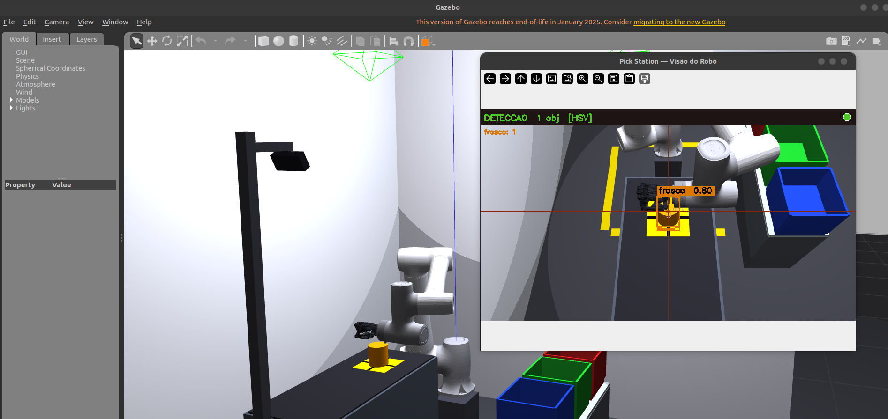
Palm Grip
Preensão envolvente de palma — usada para o frasco (âmbar). A mão fecha em torno do corpo cilíndrico com apoio total da palma.
Objeto: FrascoCaixa 1 — vermelhaPalm Grip
Galeria
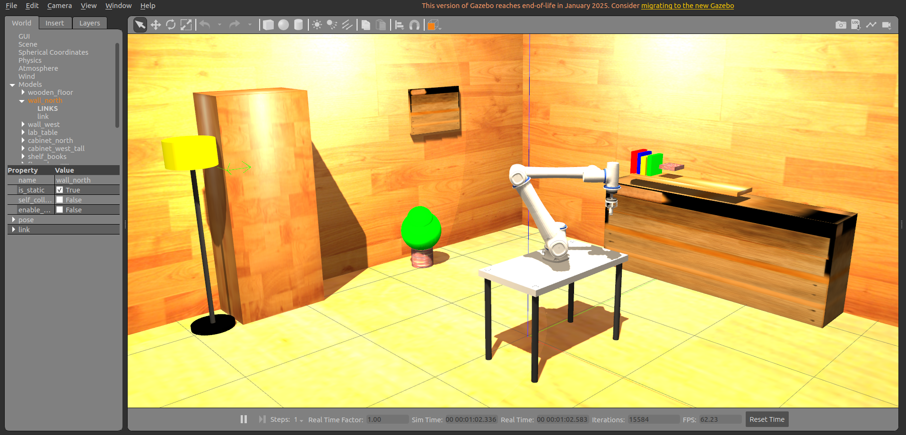
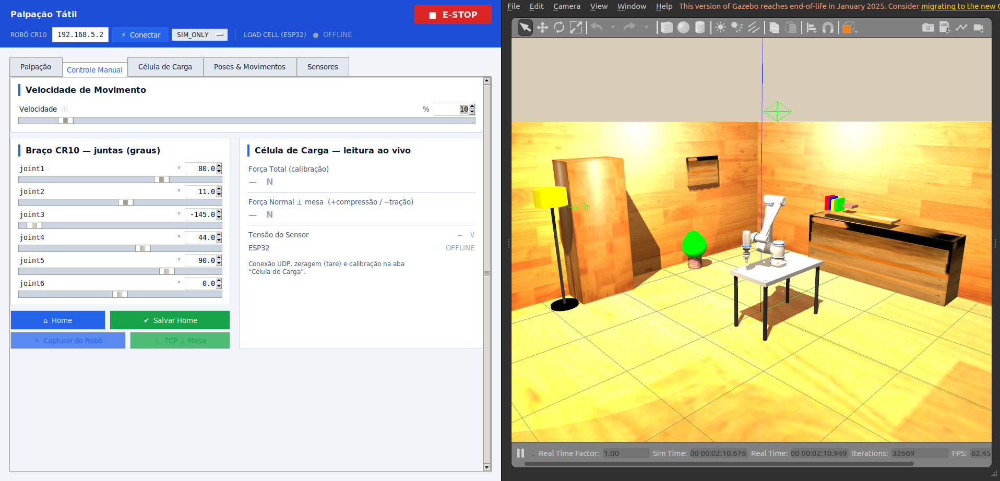
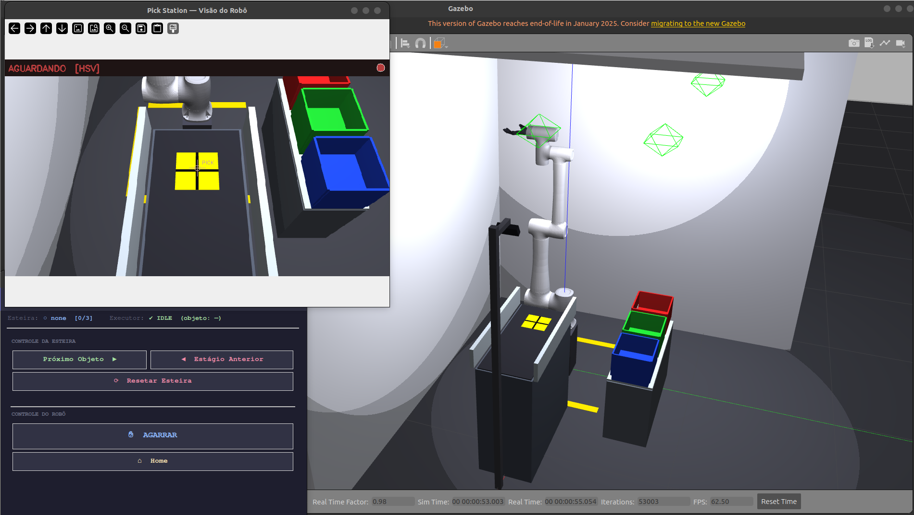
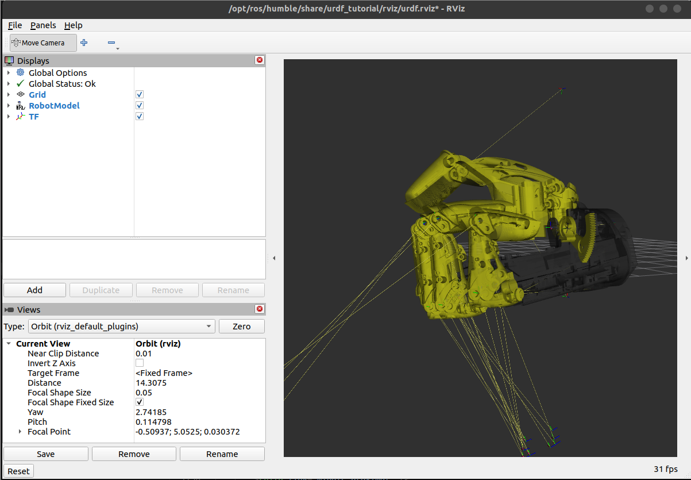
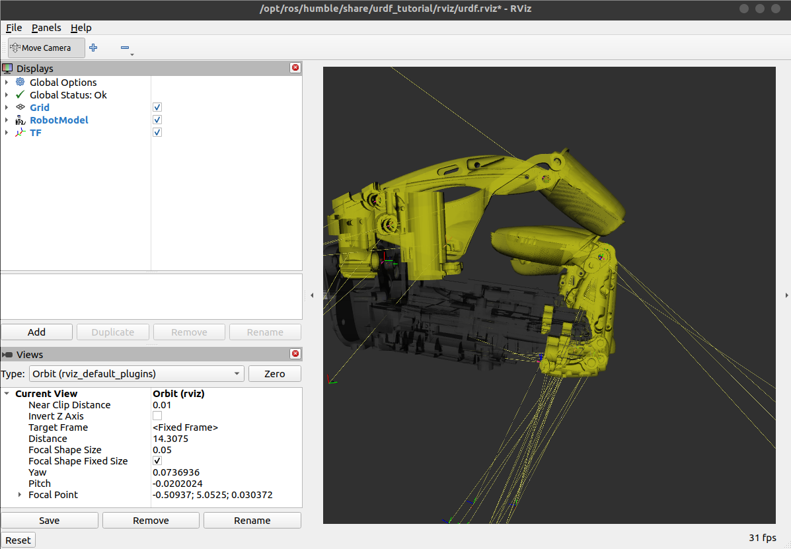
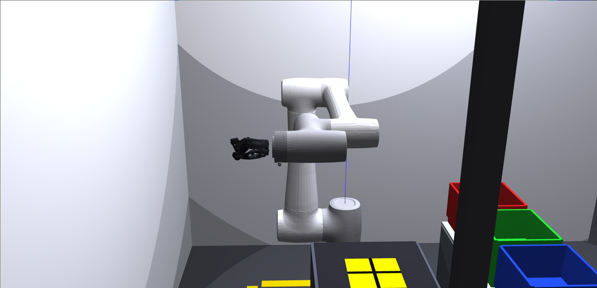
Como rodar
Célula de manufatura
source install/setup.bash
ros2 launch grasp_ml_pack conveyor_cell.launch.py
# autônomo com YOLO:
ros2 launch grasp_ml_pack conveyor_cell.launch.py use_yolo:=true autonomous:=trueCélula de palpação
# ponta tátil + célula de carga (libera a aba Palpação):
ros2 launch touch_pack tactile_cell.launch.py end_effector:=touch_tool
# espelho do robô real:
ros2 launch touch_pack tactile_cell.launch.py end_effector:=touch_tool \
control_mode:=mirror robot_ip:=192.168.5.2Mão COVVI no CR10 (visualização)
ros2 launch hand_pack cr10_covvi_gazebo.launch.py # Gazebo
ros2 launch hand_pack cr10_covvi_rviz.launch.py # RViz